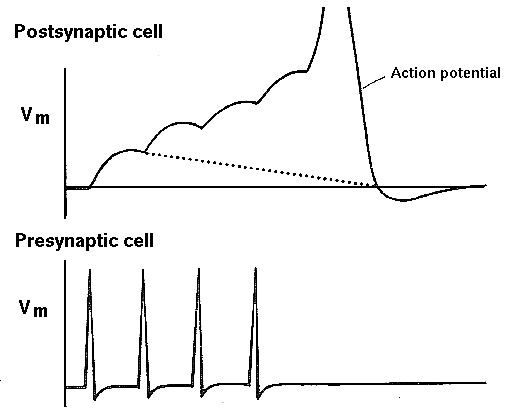
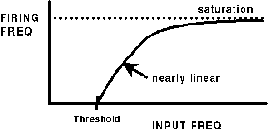
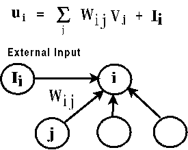
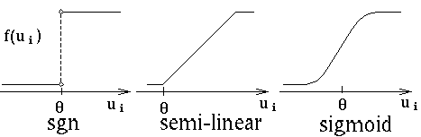
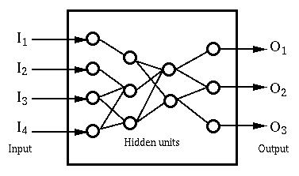
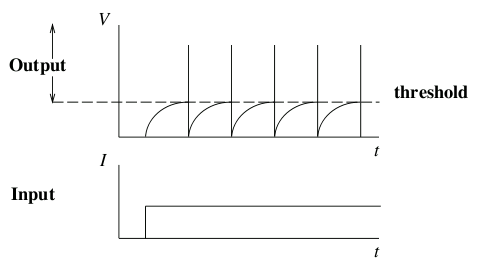
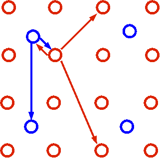

Back to
Realistic Neural Modeling with GENESIS
Back to
Realistic Neural Modeling with GENESIS
The goal of this short summary is to explain the neurobiological basis of ANN models by identifing the characteristics of biological neurons and neural networks that should go into a simple model of what we might call "biologically-inspired computation".
What do we know about the behavior of real neurons that we would like to include in our model?

Input Output
|_______|_______|_______|_______| ________________________________
|___|___|___|___|___|___|___|___| |_______|_______|_______|_______|
|_|_|_|_|_|_|_|_|_|_|_|_|_|_|_|_| |_|_|_|_|_|_|_|_|_|_|_|_|_|_|_|_|
||||||||||||||||||||||||||||||||| |_|_|_|_|_|_|_|_|_|_|_|_|_|_|_|_|
Do you remember why this is so?
If we plot the input firing rate vs. the output firing rate, we generally get something like this, with a threshold, and a saturation level arising from the refractory period for firing.

There are many variations on the models which have been proposed for artificial neuron-like computational units. Other lectures in this course will cover some of them in detail, and a few of them superficially. Most of them have these basic features.


The function often has some sort of threshold parameter (theta) that allows different neurons to have different thresholds for activation. We'll see different variations on this basic paradigm. Almost all of them have in common the idea that the so-called "neurons" receive inputs from the outside world, or from other neurons, which are multiplied by some weighting factor and summed. The output or "activation" is formed by passing the input through some sort of "squashing" function. This output often becomes the input to other neurons.
The situation we are describing is something like this,

with some units ("neurons") receiving external inputs (I), some presenting an external output (O), and others being intermediate (hidden) units that only connect with other units. The output of one unit is passed on to become part of the weighted input of another, finally reaching the output units. The states of the neurons may be updated in parallel (synchronously), or one at a time (asynchronously). In most neural network models, the network is designed so that the outputs of all the neurons will eventually settle down to a steady state when the external input is held constant. It may take a number of iterations of the update process for this to occur. (Biological networks are different in this respect - their output is usually continously changing.) Various learning algorithms such as "backpropagation" are used to modify the weights in order train the network to perform some mapping between inputs and outputs.
A question to discuss: What possibly significant features have we left out of our model? Are there any important ways in which it is different from real neurons?
Spatial effects - What are the consequences of having inputs to various parts of an extended dendritic tree? Can the right weights in a ANN model take this into account? Perhaps not. For example, shunting inhibition by the activation of channels close to the soma can "gate" excitation from more distant regions. The various ways that that computations are performed in the dendritic tree is a current research topic.
Temporal effects - is firing rate everything? Our artifical neurons have an output which either corresponds to a firing rate or simply to "firing" or "not firing". However, the pattern of firing of a biological neuron can encode information. The phase relationship and correlations between the firing of neurons can be important. If a neuron receives input from several others that are firing in unison, the effect will be larger than if their firings were uncorrelated. There may be even more subtle ways that the spacing of action potentials can convey information. Consider the differences between the firing patterns of neurons A, B, and C, which all have the same average firing rate:
A |___|___|___|___|___|___|___|___|
B __|___|___|___|___|___|___|___|__
C |||_________|||_________|||______
If another neuron receives synaptic inputs from neurons A, B, or C, can you see how the results might vary?
Here are some specific examples:
For some rather outdated lecture notes on AI and Artificial Neural Nets from a University of Colorado web site, see:
Computer models of mind and brain - Artificial Intelligence and Lectures on Artificial Neural Networks.
In order to provide more realistic neurons than those used in non-spiking artificial neural nets, Integrate-and-Fire neuron models are often used in simplified network models. As illustrated below, they are point neurons with no dendritic structure or ion channels. They simply sum post-synaptic potentials as if charging the membrane capacitance and fire a spike when a threshold is exceeded. The models typically used for the synaptic inputs range from simple current injection pulses to the realistic synaptically activated conductance models used in GENESIS and other biologically realistic neural simulators.
|
Integrate-and-Fire neuron if V < Vthresh, then V = IR[1 - exp(-t/RC)] else generate a spike and set V = Vrest |
 |
Network of Integrate-and-Fire neurons
|
 |
The computational efficiency of this simple model makes it possible to rapidly simulate networks such as the one illustrated above. Special-purpose simulators for integrate-and-fire networks can easily simulate networks with hundreds of thousands of neurons.
Back to
Realistic Neural Modeling with GENESIS